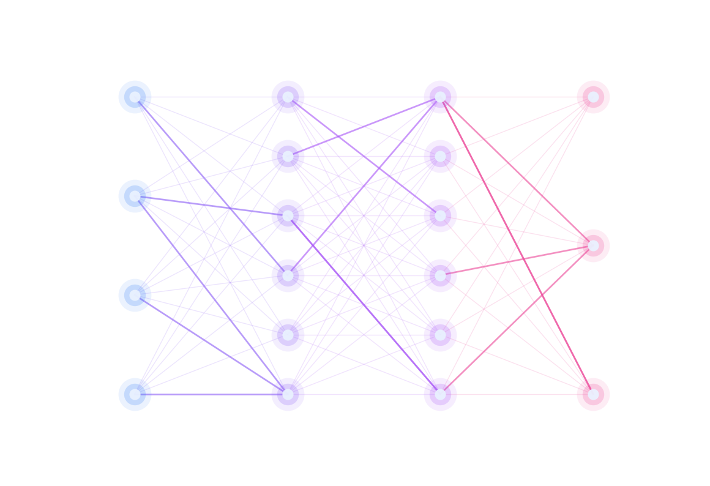

Comprends l'intelligence artificielle en construisant le Web qui la présente.
L'intelligence artificielle (IA) est une discipline de l'informatique qui crée des programmes capables d'accomplir des tâches que l'on croyait réservées aux humains : reconnaître une image, comprendre une phrase, conduire une voiture ou écrire un texte. Pour cela, la machine n'est pas programmée instruction par instruction : elle apprend à partir de données, un peu comme un élève progresse à force d'exercices, en suivant les règles d'un algorithme.

Le premier réseau de neurones, le perceptron, date des années 1950.
(psst : une anecdote mystère est cachée quelque part dans cette page... affiche le code source avec Ctrl + U !)
L'intelligence artificielle n'est pas un bloc unique : c'est une famille de techniques. En voici quatre que tu croises déjà, souvent sans le savoir, dans ton quotidien.
La machine analyse les pixels d'une image pour reconnaître des visages, des objets ou des panneaux de signalisation. C'est elle qui débloque ton téléphone d'un regard et qui aide les voitures autonomes à voir la route.
La machine transforme les ondes sonores de ta voix en texte, puis en instructions. Les assistants vocaux comprennent tes questions, et les logiciels de sous-titrage transcrivent les cours en temps réel grâce à cette technologie.
Au lieu d'analyser, cette IA crée : elle rédige des textes, dessine des images, compose de la musique ou écrit du code à partir de millions d'exemples. Les chatbots que tu as peut-être déjà essayés en font partie.
L'IA pilote des robots qui perçoivent leur environnement et décident de leurs mouvements : bras industriels, robots chirurgiens, drones de livraison ou simples aspirateurs autonomes qui cartographient ta maison.
Chaque notion du programme est utilisée de manière utile et visible. En voici la liste :
title hidden display transition box-shadow opacity filter element.class
Exemple 1 : attribut global title (infobulle au survol)
<span title="Capacité d'une machine à apprendre à partir de données">IA</span>
Exemple 2 : attribut global hidden (contenu masqué)
<p hidden>Le premier réseau de neurones date des années 1950.</p>
Exemple 3 : opacity, filter et transition (extrait de style.css)
img.illustration { display: block; /* l'image occupe sa propre ligne */ opacity: 0.85; /* légèrement transparente */ filter: grayscale(50%); /* la moitié des couleurs est retirée */ transition: filter 0.4s; /* retour de la couleur en douceur */ }